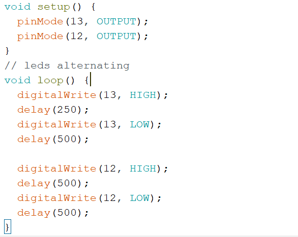

Opdracht 3b
De leds gaan hier om de beurt aan en uit. Dus als groen aan is, is geel uit en andersom. Dit heb ik gedaan door in de loop de pin delay van pin 13 dubbel zo lang te doen.
De leds gaan hier om de beurt aan en uit. Dus als groen aan is, is geel uit en andersom. Dit heb ik gedaan door in de loop de pin delay van pin 13 dubbel zo lang te doen.
Hier is het net als opdracht 3 de bedoeling dat de leds weer om en om gaan. Alleen is dat met de brightness in plaats van het uit en aan doen. 2 For loops zijn hiervoor nodig, voor elke led 1. De ene telt op tot 256 en de ander telt af naar 0
Hier is door middel van een potmeter een draaiknopje interactie met de leds. Hier is het weer dat de leds om de beurt langzaam aan en uit gaan. Het is vrij simpel. Het groene ledje volgt hierbij gewoon de sensor value. En het gele ledje doet vervolgens nog -255 op de waarde van de sensor value. Hierdoor gaat het gele ledje pas aan de andere kant van de knop pas volledig aan.
In het filmpje zijn de opdrachten abc samengevoegd tot 1 bij opdracht c. Hier kan je met een pot meter naar het volgende scherm gaan van de matrix. Ik heb het hier in 8 schermen ingedeeld. In elke if statement staat er welke lampjes aan moeten. Hier komt te staan "*😀*HAL LO!😀". Tussen de "L" zit er nog 1 display clear zodat het duidelijk is dat het letter 2 keer er is.